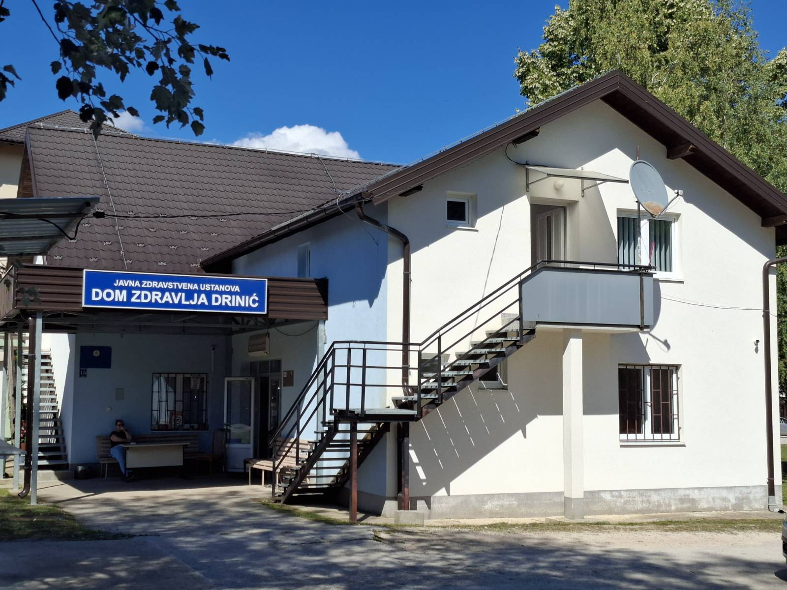

O nama
About us
JZU DZ Drinić osnovan je 2000. godine, u novonastaloj opštini Petrovac, sa sjedištem u Driniću.
The Public Health Center Drinić (JZU DZ Drinić) was established in the year 2000, in the newly formed municipality of Petrovac, with its headquarters in Drinić.
Od svog nastanka pokriva primarnom zdravstvenom zaštitom područje opštine Petrovac i dijelove okolnih opština Bosanski Petrovac i Drvar.
Since its establishment, it has provided primary health care coverage for the area of the municipality of Petrovac and parts of the surrounding municipalities of Bosanski Petrovac and Drvar.
Registrovan je jedan tim porodične medicine sa oko 1900 korisnika primarne zdravstvene zaštite.
There is one registered family medicine team with approximately 1,900 primary health care users.
